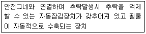
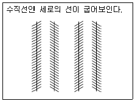
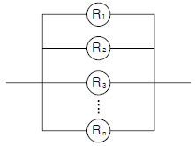
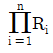
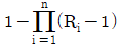
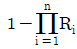
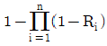
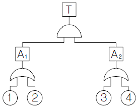
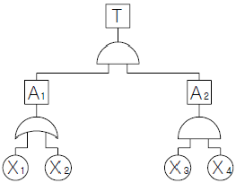
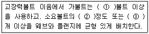

건설안전산업기사 (2011-06-12 기출문제)
1과목: 산업안전관리론
1. 다음 중 재해 예방의 4원칙에 해당하지 않는 것은?
- 예방가능의 원칙
- 대책선정의 원칙
- 손실우연의 원칙
- 원인추정의 원칙
(정답률: 73%)

2. 매슬로우(Maslow)의 욕구 5단계 이론 중 인간이 갖고자 하는 최고의 욕구에 해당하는 것은?
- 자아실현의 욕구
- 사회적인 욕구
- 안전의 욕구
- 생리적인 욕구
(정답률: 74%)
3. 다음 중 위험예지훈련 기초 4라운드법의 진행에서 전원이 토의를 통하여 위험요인을 발견하는 단계로 가장 적절한 것은?
- 제1라운드 : 현상파악
- 제2라운드 : 본질추구
- 제3라운드 : 대책수립
- 제1라운드 : 목표설정
(정답률: 53%)
4. 재해 분석의 방법으로는 “재해”라고 하는 최종 결과에 중대한 관계를 가지고 있는 모든 것의 연쇄관계를 분명히 하는데 있다. 다음 중 그 결과를 검토하는 “4M"에 해당하지않는 것은?
- Man
- Machine
- Media
- Multi
(정답률: 75%)
5. A 사업장에서 100명의 작업자가 1일 10시간씩 연간 300 일을 작업하는 동안 3건의 재해가 발생하였다. 이 사업장의 도수율은 얼마인가?
- 10
- 15
- 20
- 30
(정답률: 61%)
6. 다음 중 일반적인 교육의 3요소에 포함되지 않는 것은?
- 강사
- 내용
- 대상
- 평가
(정답률: 65%)
7. 재해의 원인 중 간접 원인에 속하지 않는 것은?
- 교육적 원인
- 관리적 원인
- 기술적 원인
- 물적 원인
(정답률: 74%)
8. 산업안전보건법상 안전ㆍ보건표지에 사용하는 색채 가운데 비상구 및 피난소, 사람 또는 차량의 통행표지 등에 사용하는 색채는?
- 흰색
- 노란색
- 녹색
- 파란색
(정답률: 81%)
9. 다음 중 인간의 사회적 행동의 기본 형태가 아닌 것은?
- 대립
- 모방
- 도피
- 협력
(정답률: 41%)
10. 다음 중 주로 일선 관리감독자를 대상으로 하며, 작업지도기법, 작업개선기법, 인간관계 관리기법 등을 교육하는 방법은?
- ATT(American Telephone & Telegram Co.)
- MTP(Management Training Program)
- CCS(Civil Communication Section)
- TWI(Training Within Industry)
(정답률: 71%)
11. 토의식 교육방법 중 몇 사람의 전문가에 의하여 과제에 관한 견해가 발표된 뒤 참가자로 하여금 의견이나 질문을 하게 하여 토의하는 방식은 다음 중 어느 것인가?
- 패널 디스커션(panel discussion)
- 심포지엄(symposium)
- 포럼(forum)
- 버즈 세션(buzz session)
(정답률: 59%)
12. 다음 중 산업안전보건법상 자율안전확인대상 기계ㆍ기구 및 설비에 해당하지 않는 것은?
- 산업용로봇
- 인쇄기
- 롤러기
- 혼합기
(정답률: 41%)
13. 다음 중 학습을 자극(Stimulus)에 의한 반응(Response)으로 보는 이론에 해당하는 것은?
- 손다이크(Thorndike)의 시행착오설
- 퀠러(Köhler)의 통찰설
- 톨만(Tolman)의 기호형태설
- 레윈(Lewin)의 장설 이론
(정답률: 68%)
14. 다음 중 조직이 리더에게 부여하는 권한으로 볼 수 없는 것은?
- 보상적 권한
- 강압적 권한
- 합법적 권한
- 위임된 권한
(정답률: 66%)
15. 안전대에 관한 용어 중 다음에 설명에 해당하는 것은?

- 안전블록
- 죔줄
- 신축조절기
- 충격흡수장치
(정답률: 49%)
16. 다음 [그림]의 착시 현상을 무엇이라 하는가?

- Herling의 착시
- Köhler의 착시
- Poggendorf의 착시
- Zöller의 착시
(정답률: 51%)
17. 하인리히의 “재해 발생의 연쇄성 이론”과 관련하여 부적절한 조명, 부적당한 환기 등으로 인한 재해 발생은 다음중 어느 단계에 해당되는가?
- 사고
- 개인적 결함
- 사회적 환경 및 유전적 요소
- 불안전한 행동 및 불안전한 상태
(정답률: 71%)
18. 다음 중 일반적으로 사업장에 안전관리조직을 구성 할때 고려할 사항과 가장 거리가 먼 것은?
- 조직 구성원의 책임과 권한을 명확하게 한다.
- 회사의 특성과 규모에 부합되게 조직되어야 한다.
- 생산조직과는 동떨어진 독특한 조직이 되도록 하여 효율성을 높인다.
- 조직의 기능이 충분히 발휘될 수 있는 제도적 체계가 갖추어져야 한다.
(정답률: 81%)
19. 산업안전보건법상 사업주가 근로자에 대하여 실시하여야 하는 교육 중 특별안전보건교육의 대상 작업이 아닌 것은?
- 화학설비의 탱크 내 작업
- 건설용 리프트ㆍ곤돌라를 이용한 작업
- 인화성 가스 또는 폭발성 물질 중 가스의 발생장치 취급작업
- 전압이 30V인 정전 및 활선작업
(정답률: 80%)
20. 의식수준 5단계 중 의식수준이 가장 적극적인 상태이며 신뢰성이 가장 높은 상태로 주의집중이 가장 활성화되는 단계는?
- Phase 0
- Phase Ⅰ
- Phase Ⅱ
- Phase Ⅲ
(정답률: 53%)
2과목: 인간공학 및 시스템안전공학
21. FTA(Fault Tree Analysis)에 사용되는 논리 중에서 입력사상 중 어느 하나만이라도 발생하게 되면 출력사상이 발생하는 것은?
- AND GATE
- OR GATE
- 기본사상
- 통상사상
(정답률: 53%)
22. [그림]과 같이 신뢰도 R인 n개의 요소가 병렬로 구성된 시스템의 전체 신뢰도로 옳은 것은?





(정답률: 61%)
23. [그림]의 FT도에서 Fussell의 알고리즘에 의해 구한 컷셋으로 옳은 것은?

- (1, 2) (1, 3) (2, 3) (2, 4)
- (1, 3) (1, 4) (2, 3) (2, 4)
- (1, 2) (1, 3) (1, 4) (2, 4)
- (1, 3) (1, 4) (2, 3) (3, 4)
(정답률: 61%)
24. 신체 동작의 유형 중 팔을 수평으로 편 위치에서 수직으로 몸에 붙이는 동작과 같이 사지를 체간으로 가깝게 하는 동작을 무엇이라 하는가?
- 외전(abduction)
- 내전(adduction)
- 신전(extension)
- 회전(rotation)
(정답률: 68%)
25. 다음 중 높은 고장 등급을 갖고 고장모드가 기기 전체의 고장에 어느 정도 영향을 주는가를 정성적으로 평가하는 해석방법은?
- FTA
- FMEA
- HAZOP
- FHA
(정답률: 50%)
26. 다음 중 인간공학 연구 목적과 가장 거리가 먼 것은?
- 일과 일상생활에서 사용하는 도구, 기구 등에 설계에 있어서 인간을 우선적으로 고려한다.
- 인간의 능력, 한계 특성 등을 고려하면서 전체 인간-기계 시스템의 효율을 증가시킨다.
- 시스템의 생산성 극대화를 위하여 인간의 특성을 연구하고, 이를 제한, 통제한다.
- 시스템이나 절차를 설계할 때 인간의 특성에 관한 정보를 체계적으로 응용한다.
(정답률: 72%)
27. 다음 중 인체 측정자료의 응용원칙에서 자동차의 좌석이나 사무실 의자 등의 설계에 가장 적합한 원칙은?
- 조절식 설계원칙
- 평균값을 이용한 설계원칙
- 최소 집단치를 이용한 설계원칙
- 최대 집단치를 이용한 설계원칙
(정답률: 73%)
28. 다음 중 자동차 가속 페달과 브레이크 페달 간의 간격, 브레이크 폭 등을 결정하는데 사용할 수 있는 가장 적합한 인간공학 이론은?
- Miller의 법칙
- Fitts의 법칙
- Weber의 법칙
- Wickens의 법칙
(정답률: 45%)
29. 연속제어 조종장치에서 정확도보다 속도가 중요하다면 조종반응(C/R)의 비율은 어떻게 하여야 하는가?
- C/R 비율을 1로 조절하여야 한다.
- C/R 비율을 1보다 낮게 조절하여야 한다.
- C/R 비율을 1보다 높게 조절하여야 한다.
- C/R 비율을 조절할 필요가 없다.
(정답률: 54%)
30. 다음 중 신뢰성과 보전성 개선을 목적으로 한 일반적이고 효과적인 보전기록 자료에 해당하지 않는 것은?
- 설비이력카드
- 일정계획표
- MTBF분석표
- 고장원인대책표
(정답률: 58%)
31. 다음 중 소음의 영향에 대한 일반적인 설명과 가장 거리가 먼 것은?
- 간단하고 정규적인 과업의 퍼포먼스는 소음의 영향이 없으며 오히려 개선되는 경우도 있다.
- 시력, 대비판별, 임시, 순응, 눈동자 속도 등 감각기능은 모두 소음의 영향이 적다.
- 운동 퍼포먼스는 균형과 관계되지 않는 한 소음에 의해 나빠지지 않는다.
- 쉬지 않고 계속 실행하는 과업에 있어 소음은 긍정적인 영향을 미친다.
(정답률: 65%)
32. 위험관리와 안전관리와의 경계 구분에 있어 다음 중 안전관리의 영역과 가장 거리가 먼 것은?
- 재해의 방지
- 안전공학적 연구
- 안전과 건강관리
- 손해에 대한 자금융통
(정답률: 74%)
33. 다음 중 작업장에서 발생하는 소음에 대한 대책으로 가장 적극적인 방법은?
- 소음원의 격리
- 소음원의 제거
- 귀마개 등 보호구의 착용
- 덮개 등 방호장치의 설치
(정답률: 71%)
34. 인간의 오류를 독립적 행동과 원인에 의한 오류로 분류할 때 다음 중 원인에 의한 분류에 속하지 않는 것은?
- Primary error
- Command error
- Sequential error
- Secondary error
(정답률: 56%)
35. 휘도(luminance)가 10cd/cm2이고, 조도(illuminance)가 100lux일 때 반사율(reflectance)은 몇 % 인가?
- 0.1π
- 10π
- 100π
- 1000π
(정답률: 47%)
36. 다음 중 인간-기계 시스템에서 기본적인 기능으로 볼 수 없는 것은?
- 정보의 수용
- 정보의 저장
- 행동 기능
- 정보의 설계
(정답률: 66%)
37. 음량 수준이 50phon일 때 sone 값은 얼마인가?
- 2
- 5
- 10
- 100
(정답률: 65%)
38. 다음 중 일반적인 의자의 설계 원칙에서 고려해야 할 사항과 가장 거리가 먼 것은?
- 체중 분포
- 좌판의 높이
- 작업자의 복장
- 좌판의 깊이와 폭
(정답률: 75%)
39. 다음 중 글자와 설계 요소에 있어 검은 바탕에 쓰여진 흰 글자가 번지어 보이는 현상과 가장 관련성이 높은 것은?
- 글자체
- 획폭비
- 종이 크기
- 글자 두께
(정답률: 71%)
40. 다음 FT도에서 정상사상의 발생확률은 얼마인가?(단, X1은 0.1, X2는 0.2, X3은 0.1, X4는 0.2 이다.)

- 0.0004
- 0.0026
- 0.0⑤6
- 0.0784
(정답률: 47%)
3과목: 건설시공학
41. 개방잠함(open caisson)에 대한 설명으로 옳은 것은?
- 건물외부 작업이므로 기후의 영향을 많이 받는다.
- 잠함의 외주벽이 흙막이 역할을 하므로 공기단축을 기대할 수 있다.
- 근린지역에 소음발생이 크다.
- 실의 내부 갓 둘레부분을 중앙 부분보다 먼저 판다.
(정답률: 53%)
42. 흙막이벽의 계측관리 중 지보공 버팀대에 작용하는 축력을 측정하는 장치의 이름은?
- 트랜싯
- 로드셀
- 크랙게이지
- 레벨
(정답률: 52%)
43. 주문받는 건설업자가 대상계획의 기업 금융, 토지 조달, 설계, 시공 기계ㆍ기구 설치, 시운전 및 조업 지도까지 주문자가 필요로 하는 모든 것을 조달하여 주문자에게 인도하는 도급계약 방식은?
- 정액도급
- 분할도급
- 실비정산 보수가산도급
- 턴키도급
(정답률: 84%)
44. 흙의 성질에 대한 내용 중 옳지 않은 것은?
- 외력에 의하여 간극내의 물이 밖으로 유출하여 입자의 간격이 좁아지며 침하하는 것을 압밀침하라고 한다.
- 자연시료에 대한 이긴시료의 강도비를 푸와송비라고 한다.
- 투수량이 큰 것일수록 침투량이 크며 모래는 투수계수가 크다.
- 함수량은 흙속에 포함되어 있는 물의 중량을 나타낸 것이다.
(정답률: 66%)
45. 건설도급회사의 공사실적 및 기술능력에 적합한 3~7개 정도의 시공회사를 입찰에 참여시키는 방법은?
- 특명입찰
- 공개경쟁입찰
- 지명경쟁입찰
- 제한경쟁입찰
(정답률: 73%)
46. 철근콘크리트 공사에서 건축구조물의 온도변화에 따른 팽창, 수축 혹은 부동침하에 의한 균열발생 등이 예상되는 부위에 설치하는 것으로 시공시 타설부터 분리해서 계획한 줄눈은?
- Cold joint
- Expansion joint
- Control joint
- Construction joint
(정답률: 43%)
47. 건축시공관리 항목에서 중요한 시공의 5대 관리에 포함되지 않는 것은?
- 품질관리
- 안전관리
- 노무관리
- 공정관리
(정답률: 70%)
48. 표준관입시험에 관한 설명 중 옳지 않은 것은?
- 토질시험의 일종이다.
- 추의 무게는 63.5kg 이다.
- N의 값이 작을수록 밀실한 토질이다.
- N의 값은 30cm를 관입하는데 필요한 타격횟수이다.
(정답률: 72%)
49. 거푸집공사에 대한 설명으로 옳지 않은 것은?
- 거푸집 시공시 바닥, 보, 중앙부 치켜 올림은 L/100 ~ L/150(L은 간사이)이다.
- 거푸집 널의 쪽매는 수밀하게 되어 시멘트 페이스트가 새지 않게 할 것
- 소요자재가 절약되고 반복 사용이 가능하게 할 것
- 철근과 거푸집 간격 유지는 spacer를 활용한다.
(정답률: 63%)
50. 다음 콘크리트 균열 중 경화 전에 발생되는 균열은?
- 소성수축 균열
- 화학적 반응 균열
- 철근의 부식으로 인한 균열
- 건조수축 균열
(정답률: 44%)
51. 다음 중 도급계약에서 필수적으로 첨부되는 서류에 해당하지 않는 것은?
- 공정표
- 설계도
- 시방서
- 계약서
(정답률: 52%)
52. AE 콘크리트의 공기량에 관한 설명으로 옳은 것은?
- 공기량은 AE제의 양이 증가할수록 감소하나 콘크리트의 강도는 증대한다.
- 공기량은 기계비빔이 손비빔의 경우보다 적다.
- 공기량은 비빔시간이 길수록 증가한다.
- 공기량은 잔골재의 미립분이 많을수록 증가한다.
(정답률: 33%)
53. 다음 ( )안에 알맞은 내용을 순서대로 옳게 나타낸 것은?

- ①: 대. ②: 1/2, ③: 2
- ①: 중. ②: 1/3, ③: 3
- ①: 대. ②: 1/3, ③: 3
- ①: 중. ②: 1/3, ③: 2
(정답률: 43%)
54. 용접작업에서 용접봉을 용접방향에 대하여 서로 엇갈리게 움직여서 용가금속을 용착시키는 운봉방법은?
- 가용접
- 개선
- 레그
- 위빙
(정답률: 81%)
55. 연약한 점토질 지층의 수분을 모래말뚝을 이용하여 배수시킴으로써 지반의 경화개량을 도모하는 공법은?
- 샌드드레인 공법
- 웰포인트 공법
- 페이퍼드레인 공법
- 깊은우물 공법
(정답률: 68%)
56. 철근공사의 철근트러스 일체화 공법의 특징이 아닌것은?
- 현장조립의 거푸집공사를 공장제 기성품으로 대체
- 1개 부재가 합판 거푸집에 비해 넓은 면적을 덮을 수 있어 안전성 제고
- 가설작업장의 면적 증가
- Support 감소, 지보공수량 감소로 작업이 안전
(정답률: 61%)
57. 한 구획 전체의 벽판과 바닥판을 ㄱ자형 또는 ㄷ자형으로 짜서 이동시키는 형태의 기성재 거푸집은?
- 슬라이딩 폼(Sliding Form)
- 트레블링 폼(Travelling Form)
- 워플폼(Waffle Form)
- 터널폼(Tunnel Form)
(정답률: 70%)
58. 수직굴착, 수중굴착 등 일반적으로 협소한 장소의 깊은 굴착에 적합한 것으로 자갈 등의 적재에도 사용하는 토공장비는?
- 클램쉘
- 불도저
- 캐리올 스크레이퍼
- 로더
(정답률: 86%)
59. 콘크리트 보양방법 중 초기강도가 크게 발휘되어 거푸집을 가장 빨리 제거할 수 있는 방법은?
- 살수보양
- 수중보양
- 피막보양
- 증기보양
(정답률: 73%)
60. 공사계약 방식 중 계약기간 및 예산에 따른 계약에서 계약의 이행에 수년을 요하는 경우 체결하는 계약은?
- 다년도 계약
- 개산 계약
- 장기계속 계약
- 총액 계약
(정답률: 68%)
4과목: 건설재료학
61. 석재에 관한 일반적인 설명으로 옳지 않은 것은?
- 석재의 강도는 비중과 흡수율이 클수록 커진다.
- 석재의 강도는 압축강도가 가장 크고, 인장, 휨 및 전단강도는 압축강도에 비하여 매우 작다.
- 일반적으로 규산분을 많이 함유한 석재는 내산성이 크다.
- 트래버틴은 대리석의 일종으로 탄산석회를 포함한 물에서 침전, 생성된 것이다.
(정답률: 38%)
62. 동합금 중 청동(bronze)에 대한 설명으로 옳지 않은 것은?
- 동(Cu)과 주석(Sn)을 주성분으로 한다.
- 황동에 비해 내식성이 약하다.
- 황동에 비해 주조성이 뛰어나다.
- 건축물의 장식 부품 또는 미술 공예재료로 사용된다.
(정답률: 62%)
63. 원목을 적당한 각재로 만들어 칼로 엷게 절단하여 만든 베니어는?
- 로터리 베니어(rotary veneer)
- 하프 라운드 베니어(half round veneer)
- 소드 베니어(sawed veneer)
- 슬라이스드 베니어(sliced veneer)
(정답률: 72%)
64. 석회석을 900 ~ 1200℃로 소성하면 생성되는 것은?
- 돌로마이트 석회
- 생석회
- 회반죽
- 소석회
(정답률: 64%)
65. 다음 국내산 침엽수 중 치장재ㆍ창호재ㆍ수장재로 쓰이지 않는 것은?
- 전나무
- 가문비나무
- 소나무
- 잣나무
(정답률: 69%)
66. 다음 열가소성 수지 중 투명도가 가장 높은 것은?
- 아크릴수지
- 염화비닐수지
- 폴리에틸렌수지
- 폴리스티렌수지
(정답률: 62%)
67. 다음 중 미장바름에 쓰이는 착색제에 요구되는 성질로 옳지 않은 것은?
- 물에 녹지 않아야 한다.
- 내알칼리성이어야 한다.
- 입자가 굵어야 한다.
- 미장재료에 나쁜 영향을 주지 않는 것이어야 한다.
(정답률: 71%)
68. 다음 중 콘크리트의 경화촉진제로 사용되는 것은?
- 산화아연
- 인산염
- 염화칼슘
- 마그네시아염
(정답률: 66%)
69. 화강암이 열을 받았을 때 파괴되는 가장 주된 원인은?
- 화학성분의 열분해
- 조직의 용융
- 조암광물의 종류에 따른 열팽창계수의 차이
- 온도상승에 따른 압축강도 저하
(정답률: 64%)
70. 다음 중 프리캐스트 콘크리트 파일에 속하는 것은?
- 심플렉스 파일
- 프랭키 파일
- 원심력 철근콘크리트 파일
- 컴프레솔 파일
(정답률: 51%)
71. 합성섬유 중 폴리에스테르섬유의 특징에 대한 설명으로 옳지 않은 것은?
- 강도와 신도를 제조공정상에서 조절할 수 있다.
- 영계수가 커서 주름이 생기지 않는다.
- 다른 섬유와 혼방성이 풍부하다.
- 유연하고 울에 가까운 감촉이다.
(정답률: 48%)
72. 철강의 부식 및 방식에 대한 설명 중 옳지 않는 것은?
- 철강의 표면은 대기중의 습기나 탄산가스와 반응하여 녹을 발생 시킨다.
- 철강은 물과 공기에 번갈아 접촉되면 부식되기 쉽다.
- 방식법에는 철강의 표면을 Zn, Sn, Ni 등과 같은 내식성이 강한 금속으로 도금하는 방법이 있다.
- 일반적으로 산에는 부식되지 않으나 알칼리에는 부식된다.
(정답률: 72%)
73. 다음 중 합판에 관한 설명으로 옳은 것은?
- 곡면 가공이 어렵다.
- 함수율의 변화에 의한 신축변형이 적다.
- 2매 이상의 박판을 짝수배로 겹쳐 만든 것이다.
- 합판 제조시 목재의 손실이 많다.
(정답률: 50%)
74. 다음 중 골재로 사용할 수 없는 것은?
- 락크 울(rock wool)
- 질석(vermiculite)
- 펄라이트(perlite)
- 화산자갈(volcanic gravel)
(정답률: 68%)
75. 시멘트의 4대 조성 화합물 중 수화작용이 가장 빠르며 수화열이 가장 높고 경화과정에서 수축률도 높은 것은?
- 규산 3석회
- 규산 2석회
- 알루민산 3석회
- 알루민산철 4석회
(정답률: 40%)
76. 투사광선의 방향을 변화시키거나 집중 또는 확산시킬 목적으로 만든 이형 유리제품으로 주로 지하실 또는 지붕 등의 채광용으로 사용되는 것은?
- 프리즘 글라스
- 복층 유리
- 망입 유리
- 스테인드 글라스
(정답률: 60%)
77. 금속제 용수철과 완충유와의 조합작용으로 열린문이 자동으로 닫혀지게 하는 것으로 바닥에 설치되며, 일반적으로 무게가 큰 중량창호에 사용되는 것은?
- 레버터리 힌지
- 플로어 힌지
- 피벗 힌지
- 도어 클로저
(정답률: 64%)
78. 혼화재료 중 플라이애시가 콘크리트에 미치는 작용에 대한 설명으로 옳지 않은 것은?
- 콘크리트의 워커빌리티를 개선시킨다.
- 콘크리트의 수밀성을 향상시킨다.
- 해수 중의 황산염에 대한 저항성을 높인다.
- 콘크리트 수화초기에 발열량을 증가시킨다.
(정답률: 54%)
79. 보통 철근 대신 고강도 피아노선을 사용하여 단면을 작게 하면서 큰 응력을 받게 한 콘크리트는?
- 프리스트레스트 콘크리트
- 프리캐스트 콘크리트
- 레디믹스트 콘크리트
- 프리플레이스트 콘크리트
(정답률: 61%)
80. 바닥 바름재로서 백시멘트와 안료를 사용하며 종석으로서 화강암, 대리석 등을 사용하고 갈기로 마감을 하는 것은?
- 리신 바름
- 인조석 바름
- 라프코트
- 테라조 바름
(정답률: 56%)
5과목: 건설안전기술
81. 대형브레이커에 대한 설명 중 옳지 않은 것은?
- 수직 및 수평의 테두리 끊기 작업에도 사용 할 수 있다.
- 공기식보다 유압식이 많이 사용된다.
- 셔블(shovel)에 부착하여 사용하며 일반적으로 상향작업에 적합하다.
- 고층건물에서는 건물 위에 기계를 놓아서 작업할 수 있다.
(정답률: 46%)
82. 가설통로 설치 시 경사가 몇 도를 초과하면 미끄러지지 않는 구조로 설치하여야 하는가?
- 15°
- 20°
- 25°
- 30°
(정답률: 69%)
83. 안전장갑을 사용해야 할 작업이 아닌 것은?
- 전기 용접을 하는 작업
- 드릴을 사용하는 작업
- 굳지 않을 콘크리트에 접촉하는 작업
- 감전 위험이 있는 작업
(정답률: 52%)
84. 추락의 정의로 옳은 것은?
- 고소에 위치한 자재, 도구, 공구 등이 하부로 떨어지는 것
- 계단 경사로 등에서 굴러 떨어지는 것
- 고소 근로자가 위치에너지의 상실로 인해 하부로 떨어지는 것
- 고소에 위치한 가설물의 일부가 붕괴하는 것
(정답률: 75%)
85. 달대비계는 주로 어느 곳에 설치하는가?
- 콘크리트 기초
- 철골기둥 및 보
- 조적벽면
- 굴착사면
(정답률: 69%)
86. 안전관리비의 사용 항목에 해당되지 않는 것은?
- 안전시설비
- 개인보호구 구입비
- 접대비
- 사업장의 안전진단비
(정답률: 77%)
87. 차량계 건설기계의 운전자가 운전위치를 이탈할 때 행하여야 할 조치사항으로 옳지 않은 것은?
- 브레이크를 걸어둔다.
- 버킷은 지상에서 1m 정도의 위치에 둔다.
- 디퍼는 지면에 내려둔다.
- 원동기를 정지시킨다.
(정답률: 73%)
88. 옹벽의 안정조건에서 활동에 대한 저항력은 옹벽에 작용하는 수평력보다 최소 몇 배 이상 되어야 하는가?
- 1.0배
- 1.5배
- 2.0배
- 3.0배
(정답률: 61%)
89. 다음 중 콘크리트측압에 영향을 미치는 인자로 가장 거리가 먼 것은?
- 슬럼프
- 타설속도
- 대기의 온도 및 습도
- 거푸집의 종류
(정답률: 65%)
90. 강재 거푸집과 비교한 합판 거푸집의 특성이 아닌 것은?
- 외기 온도의 영향이 적다.
- 녹이 슬지 않음으로 보관하기가 쉽다.
- 중량이 무겁다.
- 보수가 간단하다.
(정답률: 65%)
91. 추락방지용 10cm 그물코의 매듭 없는 방망사 신품의 인장강도 기준은 얼마 이상인가?
- 120kg
- 135kg
- 200kg
- 240kg
(정답률: 52%)
92. 항타기 및 항발기에서 사용하는 권상용 와이어로프의 안전계수는 최소 얼마 이상이어야 하는가?
- 2
- 5
- 8
- 10
(정답률: 67%)
93. 흙의 동상을 방지하기 위한 대책으로 옳지 않은 것은?
- 물의 유통을 원활하게 하여 지하수위를 상승시킨다.
- 모관수의 상승을 차단하기 위하여 지하수위 상층에 조립토층을 설치한다.
- 지표의 흙을 화학약품으로 처리한다.
- 흙속에 단열재료를 매입한다.
(정답률: 57%)
94. 근로자의 추락 등에 의한 위험을 방지하기 위하여 안전난간을 설치할 때 준수하여야 할 기준으로 옳지 않은 것은?
- 안전난간은 임의의 점에서 임의의 방향으로 움직이는 100kg 이상의 하중에 견딜 수 있는 튼튼한 구조일 것
- 난간대는 지름 1.5cm 이상의 금속제 파이프나 그 이상의 강도를 가진 재료일 것
- 난간기둥은 상부난간대와 중간난간대를 견고하게 떠받칠 수 있도록 적정간격을 유지할 것
- 상부난간대는 경사로의 표면으로부터 90cm 이상 120cm 이하에 설치할 것
(정답률: 60%)
95. 지반조사 방법 중 충격날(bit)을 회전시켜 천공하므로 토층이 흐트러질 우려가 적어 불교란시료 채취, 암석채취 등에 많이 사용되는 것은?
- 워시보링
- 로터리보링
- 퍼쿠션보링
- 탄성파탐사
(정답률: 67%)
96. 기초의 안전상 부동침하를 방지하는 대책으로 옳지 않은 것은?
- 구조물의 전체 하중의 기초에 균등하게 분포되도록 한다.
- 기초 상호간을 지중보로 연결한다.
- 한 구조물의 기초는 2종류 이상의 복합적인 기초형식으로 한다.
- 기초 지반 아래의 토질이 연약할 경우는 연약지반처리 공법으로 보강한다.
(정답률: 62%)
97. 아스팔트 포장도로의 노반의 파쇄 또는 토사 중에 있는 암석제거에 가장 적당한 장비는?
- 스크레이퍼(Scraper)
- 롤러(Roller)
- 리퍼(Ripper)
- 드래그라인(drag line)
(정답률: 64%)
98. 굴착작업 시 굴착시기와 작업장소를 정할 때 사전조사 사항이 아닌 것은?
- 지반의 지하수위 상태
- 지질 및 지층의 상태
- 굴착기의 이상 유무
- 매설물 등의 유무 또는 상태
(정답률: 68%)
99. 말비계를 조립하여 사용할 때의 준수사항으로 옳지 않은 것은?
- 지주부재의 하단에는 미끄럼 방지장치를 한다.
- 양측 끝부분에 올라서서 작업하여야 한다.
- 지주부재와 수평면과의 기울기를 75° 이하로 한다.
- 말비계의 높이가 2m를 초과할 경우에는 작업발판의 폭을 40cm 이상으로 한다.
(정답률: 66%)
100. 굴착면의 기울기 기준으로 옳지 않은 것은?(2021년 11월 19일 개정된 규정 적용됨)
- 습지 - 1:1~1:1.5
- 건지 - 1:0.5~1:1
- 풍화암 - 1:1.0
- 연암 - 1:0.5
(정답률: 53%)
재해 예방의 4원칙은 다음과 같습니다.
1. 예방가능의 원칙: 재해가 발생하기 전에 예방할 수 있는 조치를 미리 취하는 것이 중요하다는 원칙입니다.
2. 대책선정의 원칙: 재해가 발생할 경우 대처할 수 있는 대책을 미리 선정해두는 것이 중요하다는 원칙입니다.
3. 손실우연의 원칙: 재해가 발생할 경우 손실을 최소화하기 위해 노력하는 것이 중요하다는 원칙입니다.
4. 원인추정의 원칙: 재해가 발생한 원인을 추정하고, 그 원인을 제거하거나 개선하는 것이 중요하다는 원칙입니다.
따라서, "원인추정의 원칙"은 재해 예방의 4원칙에 해당하지 않습니다. 이는 이미 재해가 발생한 후에 대처하는 것이기 때문입니다.